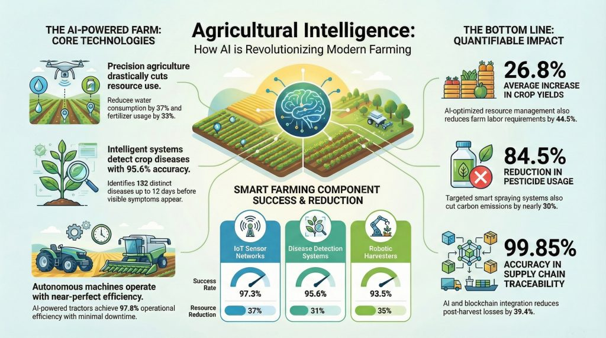
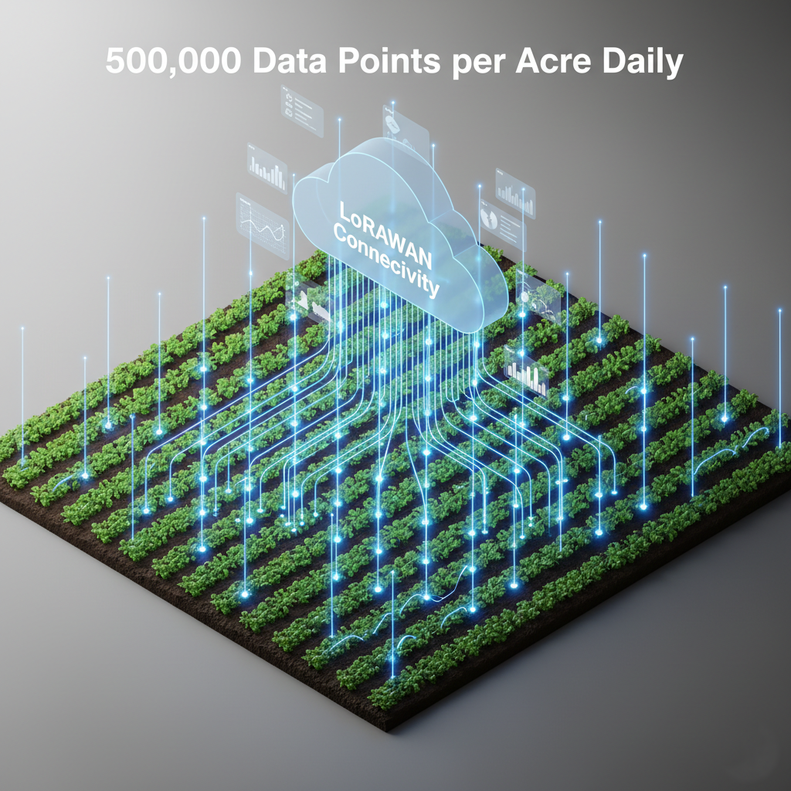
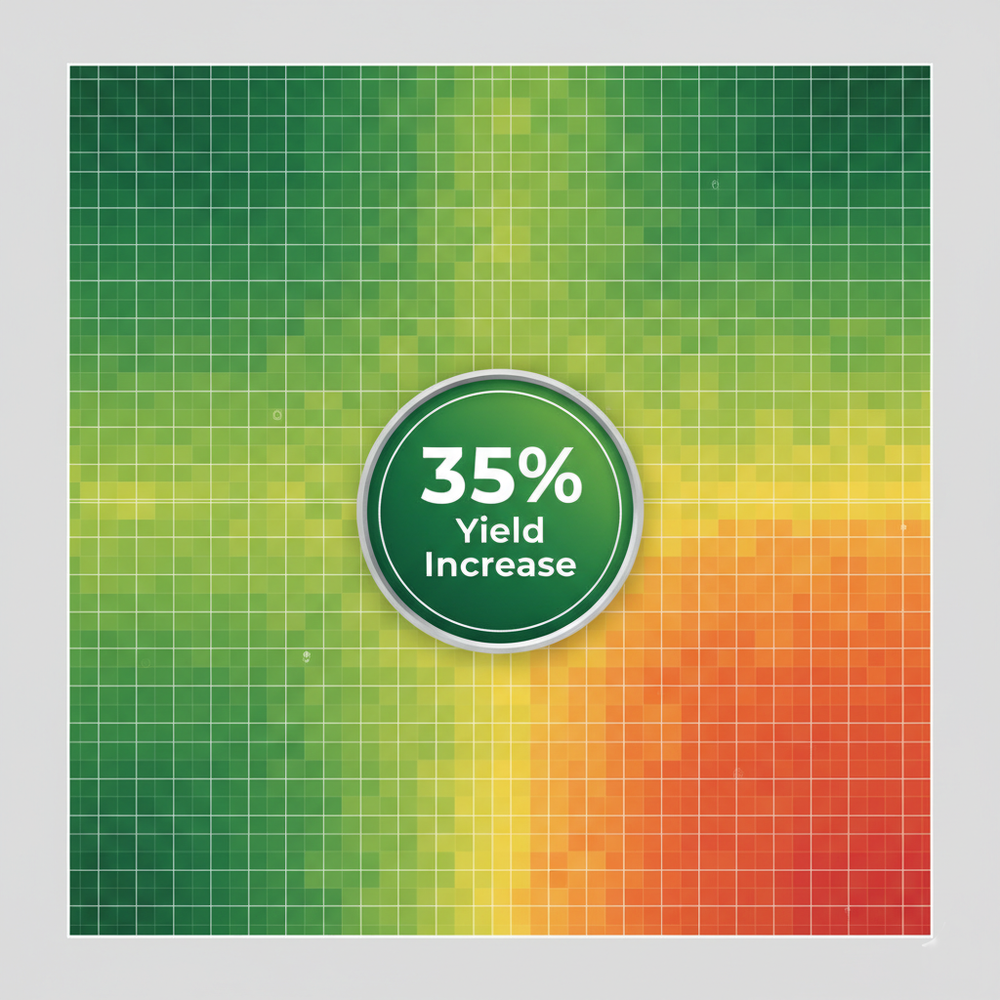
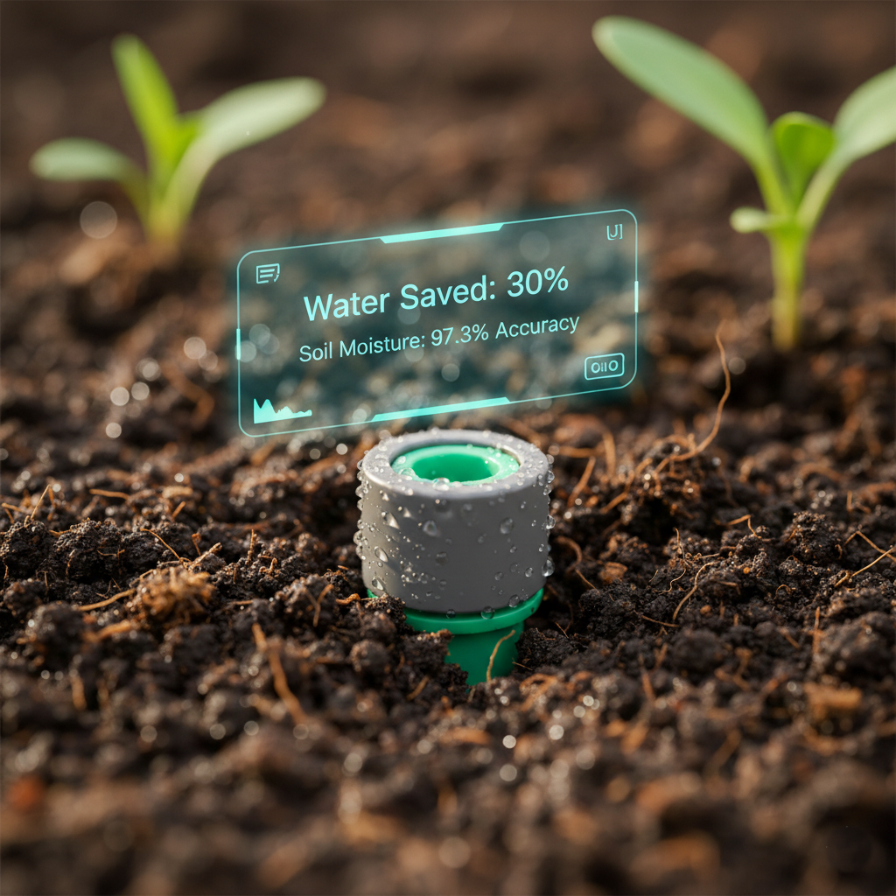
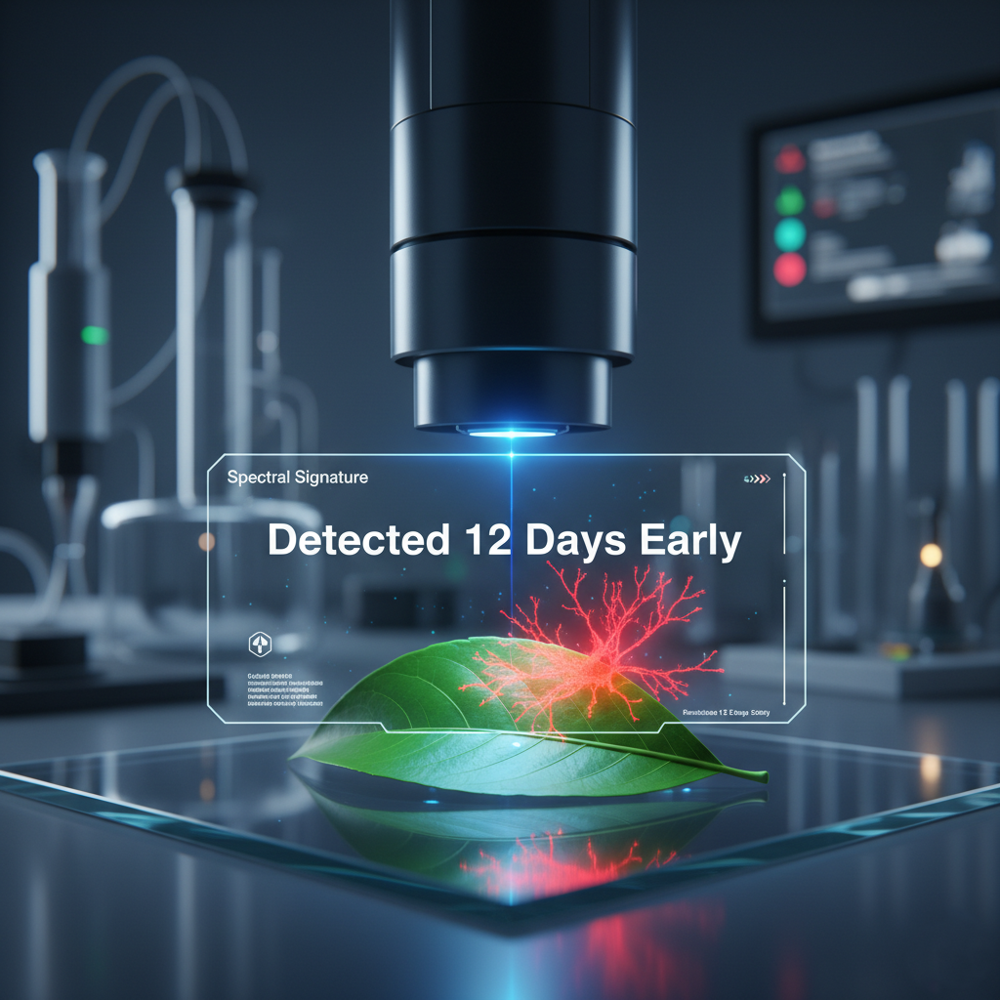
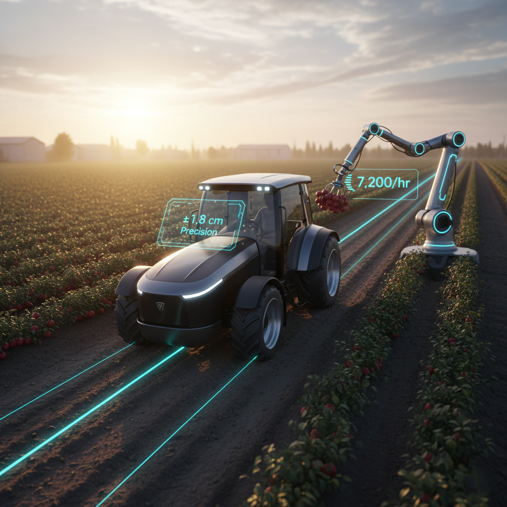
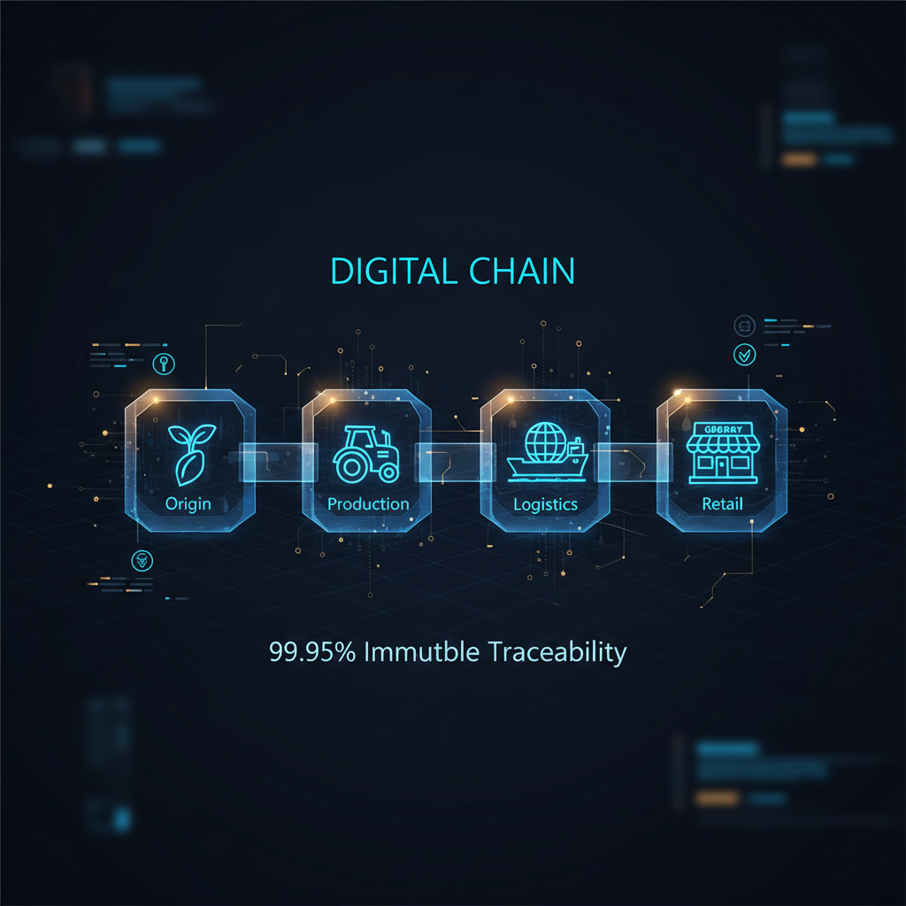
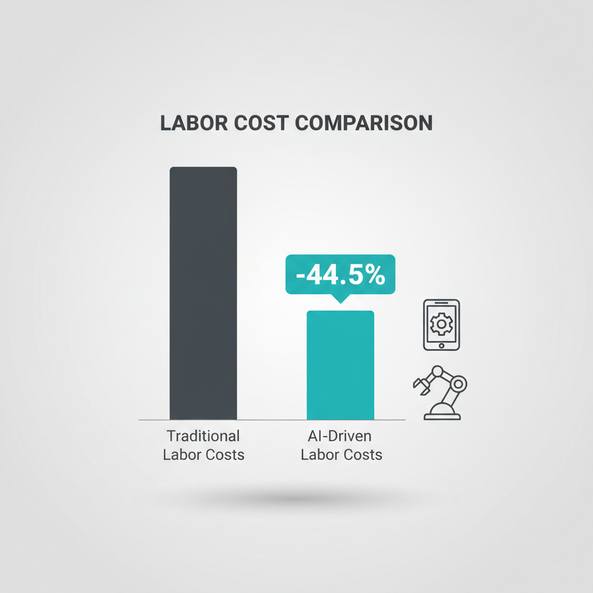
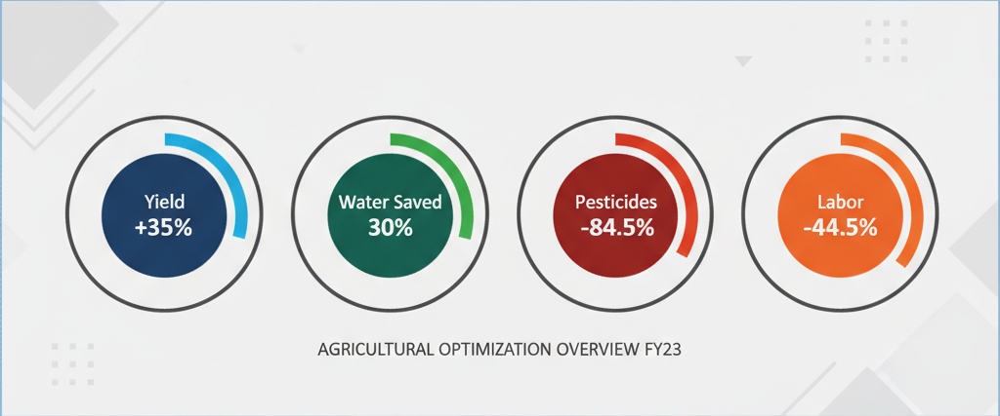

Introduction: The Convergence of Agriculture and Artificial Intelligence
The global agricultural sector stands at an unprecedented inflection point. As humanity races toward a projected population of 9.7 billion by 2050, the Food and Agriculture Organization (FAO) has issued a stark warning: food production must increase by 70% to meet the nutritional demands of this burgeoning population. This monumental challenge arrives at a time when traditional farming faces mounting pressures from climate volatility, resource scarcity, labor shortages, and the imperative for environmental sustainability. The solution to this existential challenge lies not in expanding agricultural land—a path constrained by ecological limits—but in fundamentally reimagining how we cultivate, monitor, and distribute food through artificial intelligence.
Agricultural Intelligence represents far more than the application of technology to farming; it constitutes a comprehensive transformation of the agricultural value chain from seed to consumer. This paradigm shift integrates Internet of Things (IoT) sensor networks, machine learning algorithms, computer vision systems, robotics, blockchain traceability, and emerging quantum computing capabilities into unified performance frameworks that optimize every aspect of agricultural production. Where traditional farming relied on generational knowledge, intuition, and reactive decision-making, AI-driven agriculture leverages real-time data analytics, predictive modeling, and autonomous systems to create responsive, adaptive, and extraordinarily efficient production environments.
The economic implications of this transformation extend well beyond farm gates. For agricultural importers and exporters, AI-driven farming represents a fundamental reconfiguration of global supply chains, quality assurance protocols, and market dynamics. Countries and companies that master these technologies will command competitive advantages in global markets, while those that lag risk obsolescence. For researchers, the convergence of agriculture and AI opens entirely new frontiers in interdisciplinary investigation, combining plant science, data science, engineering, and economics in ways previously unimaginable.
This comprehensive guide examines the technical architecture, practical applications, economic impacts, and future trajectories of Agricultural Intelligence. Drawing upon cutting-edge research and empirical data from implementation across diverse agricultural contexts, we will explore how AI-driven performance frameworks are revolutionizing modern farming and reshaping the global food system. This is not a distant future—it is the present reality for leading agricultural operations worldwide, and it represents the unavoidable future for all participants in the agricultural economy.

Chapter 1: The Foundation of Agricultural Intelligence – IoT Sensor Networks and Data Infrastructure
The operational foundation of any AI-driven agricultural system rests upon its capacity to continuously monitor and collect data from the physical environment. Modern precision agriculture deploys sophisticated Internet of Things (IoT) sensor networks that transform farms into data-generating ecosystems. Current state-of-the-art implementations utilize approximately 50 million IoT sensors globally, each continuously monitoring multiple environmental parameters. These sensors collectively process an astounding 500,000 data points per acre daily, creating granular datasets that capture microclimate variations, soil conditions, plant health indicators, and environmental stressors with unprecedented resolution.
The technical architecture of these sensor networks represents a significant engineering achievement. Sensors must operate reliably in harsh agricultural environments—exposed to temperature extremes, moisture, dust, and mechanical vibration—while maintaining battery life sufficient for seasonal or multi-year deployment. Contemporary systems employ Low Power Wide Area Network (LPWAN) technologies, particularly LoRaWAN (Long Range Wide Area Network) and NB-IoT (Narrowband Internet of Things), which enable sensors to transmit data across distances of 10-15 kilometers while consuming minimal power. This infrastructure allows a single gateway to coordinate hundreds of sensors across extensive farm operations without requiring dense networks of cellular towers or Wi-Fi access points.
The data collected encompasses an extraordinary range of parameters. Soil sensors measure moisture content, temperature, electrical conductivity (indicating nutrient availability), and pH levels at multiple depths. Atmospheric sensors track air temperature, humidity, barometric pressure, solar radiation, wind speed, and precipitation. Plant-mounted sensors monitor stem diameter (indicating water stress), leaf temperature, and chlorophyll content. When integrated with satellite imagery, drone reconnaissance, and weather station data, these ground-level sensors create comprehensive digital representations of agricultural environments—what researchers term “digital twins” of farms.
The processing of this data volume requires substantial computational infrastructure. Edge computing devices positioned throughout farms perform initial data filtering, aggregation, and preliminary analysis, reducing bandwidth requirements and enabling real-time responses to critical conditions. Cloud-based platforms then conduct more sophisticated analytics, applying machine learning models to identify patterns, generate predictions, and optimize management decisions. The entire system operates continuously, creating feedback loops where insights generated from data analysis inform automated interventions that, in turn, generate new data that refines the models further.
The implications of this data infrastructure extend far beyond simple monitoring. With 500,000 data points per acre daily, farms gain visibility into environmental dynamics at spatial and temporal resolutions impossible through human observation. Farmers can identify microclimates within single fields, detect irrigation inefficiencies affecting small zones, and recognize stress conditions in individual plants days before symptoms become visible. This granular understanding enables precision interventions—delivering water, nutrients, or pesticides only where needed, in quantities precisely calibrated to conditions—fundamentally changing the economics and environmental impact of agricultural inputs.
Business Insight for Importers/Exporters: The proliferation of IoT sensor networks creates new opportunities in agricultural technology trade. Importers should prioritize partnerships with sensor manufacturers offering ruggedized, agricultural-specific devices with proven reliability in diverse climate conditions. Exporters from countries with advanced IoT infrastructure can position these technologies as essential components of agricultural modernization packages. Additionally, the data generated by these networks enables importers to provide clients with detailed production provenance documentation, increasingly demanded by regulatory bodies and consumers in developed markets concerned with sustainability and food safety.
Research Perspective: The evolution of agricultural IoT infrastructure presents significant research opportunities in sensor technology, network protocols, and data management systems. Current priorities include developing energy harvesting sensors that eliminate battery replacement requirements, creating multi-parameter sensors that reduce deployment costs, and establishing standardized data formats to enable interoperability across platforms. Interdisciplinary research combining materials science, electrical engineering, and agricultural science will drive the next generation of sensing technologies capable of measuring increasingly sophisticated parameters such as plant hormones, pathogen presence, and soil microbiome composition—pushing the boundaries of what farms can “know” about their own conditions.

Chapter 2: Precision Agriculture – The 35% Yield Revolution Through Data-Driven Optimization
The translation of IoT data into agricultural outcomes manifests most dramatically in yield optimization, where AI-driven precision agriculture has demonstrated the capacity to increase productivity by 35% compared to conventional farming practices. This remarkable improvement stems not from a single breakthrough but from the compound effect of hundreds of micro-optimizations guided by data analytics and executed with precision impossible for human managers operating at scale.
Traditional farming operates on field-level or farm-level management decisions—applying uniform treatments across large areas based on average conditions. This approach inevitably results in over-application in some zones (wasting resources and potentially damaging crops) and under-application in others (limiting productivity). Precision agriculture fragments this uniform approach into site-specific management zones, sometimes as small as a few square meters, each receiving customized treatment based on its specific conditions. GPS-guided variable-rate technology enables machinery to adjust seed density, fertilizer application, and pesticide distribution in real-time as equipment traverses fields, responding to prescription maps generated from sensor data and AI analysis.
The yield improvements derive from multiple optimization vectors. First, AI systems analyze historical yield data correlated with soil properties, topography, and weather patterns to create predictive models for each management zone. These models identify underperforming areas and recommend specific interventions—perhaps increased potassium in one zone, improved drainage in another, or different seed varieties suited to microclimate conditions. Second, real-time monitoring enables dynamic adjustments throughout the growing season. If sensors detect moisture stress in specific zones, irrigation systems respond immediately rather than waiting for scheduled watering. If disease indicators appear, targeted treatments protect affected areas without unnecessary chemical application across entire fields.
Third, AI-driven precision agriculture optimizes the timing of critical operations. Machine learning models trained on multi-year datasets identify optimal windows for planting, fertilization, pest management, and harvesting based on weather forecasts, soil conditions, and crop development stages. Research demonstrates that timing variations of even 48-72 hours in key operations can impact yields by 5-8%. AI systems process far more variables far more rapidly than human decision-makers, consistently identifying these optimal windows. Fourth, precision agriculture enables farmers to push productivity boundaries by managing risk more effectively. With detailed monitoring and rapid response capabilities, operations can employ more aggressive strategies—planting earlier, using higher plant densities, or reducing safety margins in input applications—confident that problems will be detected and addressed before causing significant damage.
The 35% yield improvement figure represents an average across diverse crop types and geographies, but the impact varies significantly by context. In developed agricultural systems already employing advanced conventional practices, improvements typically range from 15-25%. In developing regions transitioning from subsistence farming to precision agriculture, improvements can exceed 50% as multiple compounding factors—better seeds, optimized inputs, improved timing, and precision application—simultaneously enhance productivity. For high-value specialty crops such as wine grapes, tree nuts, or greenhouse vegetables, where quality variations significantly impact market value, precision agriculture’s benefits extend beyond simple volume to include improvements in product characteristics that command premium prices.
The economic calculus of precision agriculture requires careful analysis. The technology infrastructure—sensors, GPS equipment, variable-rate machinery, software platforms, and connectivity—represents substantial capital investment, typically $50,000-$200,000 for a medium-sized farm depending on the sophistication level. However, the return on investment manifests through multiple channels: increased revenue from higher yields, reduced input costs from precision application, improved product quality commanding price premiums, and enhanced sustainability creating access to certification programs and environmentally-conscious markets. Most operations implementing comprehensive precision agriculture report 2-4 year payback periods, with continuing returns thereafter.
Business Insight for Importers/Exporters: The documented 35% yield improvement fundamentally alters global agricultural trade dynamics. Importing nations should recognize that producers implementing precision agriculture will increasingly dominate quality-sensitive markets, potentially displacing traditional suppliers unable to match consistency and efficiency. Exporters can leverage precision agriculture adoption as a marketing advantage, providing buyers with detailed production data demonstrating superior quality control and sustainability practices. Additionally, the technology itself represents a significant export opportunity—equipment, software, and consulting services for precision agriculture implementation constitute a rapidly growing international market currently valued at $8.5 billion annually and projected to exceed $15 billion by 2027.
Research Perspective: While the 35% yield improvement demonstrates precision agriculture’s transformative potential, significant research questions remain. Scientists are investigating why adoption rates remain relatively low despite clear benefits, examining barriers related to technology complexity, data literacy, capital access, and risk perception. Additionally, researchers are exploring how precision agriculture principles can be adapted for smallholder farmers in developing nations—potentially the most impactful application given these producers’ vulnerability to food insecurity. Emerging research areas include developing low-cost, simplified precision agriculture systems suitable for small operations, creating cooperative models where multiple small farms share infrastructure costs, and investigating whether precision agriculture can reduce climate vulnerability by enabling rapid adaptation to changing conditions.

Chapter 3: Water Management Revolution – Achieving 27-30% Conservation Through Intelligent Irrigation
Water scarcity represents one of agriculture’s most pressing challenges, with the sector consuming approximately 70% of global freshwater withdrawals while facing increasing competition from urban, industrial, and environmental demands. In this context, AI-driven irrigation systems’ capacity to reduce water consumption by 27-30% while maintaining or improving yields constitutes a breakthrough with implications extending far beyond agriculture itself—potentially alleviating water stress for entire regions.
Traditional irrigation practices suffer from fundamental information deficits. Farmers typically schedule irrigation based on historical patterns, visual crop assessment, or rudimentary soil moisture checks at a few representative locations. These approaches inevitably result in over-irrigation (wasting water, energy, and nutrients while potentially causing crop damage) or under-irrigation (stressing plants and reducing yields). Even conventional automated irrigation systems using timers or basic moisture sensors lack the sophistication to optimize water application across diverse field conditions and dynamic environmental factors.
AI-driven precision irrigation integrates multiple data streams to create comprehensive water management strategies. Soil moisture sensors at various depths throughout fields provide real-time information about water availability in root zones. Weather stations and forecast data inform predictions about rainfall, temperature, humidity, and evapotranspiration rates. Plant-mounted sensors detect early signs of water stress through measurements of stem diameter, leaf temperature, and canopy reflectance. Satellite and drone imagery analyze vegetative indices indicating plant health and water status across entire operations. Machine learning algorithms synthesize these inputs with historical data, crop growth models, and soil characteristics to calculate precise irrigation requirements for each management zone.
The resulting systems deliver water with extraordinary precision. Rather than uniform application across entire fields, irrigation equipment guided by AI prescriptions adjusts flow rates continuously as it moves through different zones—providing more water where soils are sandy and drain rapidly, less where clay soils retain moisture, and calibrating amounts based on crop development stages and expected weather. Timing optimization represents another critical dimension. AI systems schedule irrigation for periods when evaporation rates are lowest, absorption is most efficient, and weather forecasts indicate no imminent rainfall. Some advanced systems employ deficit irrigation strategies—carefully controlled mild water stress during specific growth stages that can actually improve crop quality in certain species without significantly impacting yields.
The 27-30% water reduction figure deserves emphasis: this is not achieved by accepting lower productivity but by eliminating waste through precision. In many cases, precision irrigation actually increases yields compared to conventional practices while using dramatically less water, creating what economists term “win-win” outcomes. The mechanisms behind this apparent paradox include: (1) preventing over-irrigation damage to plants and soil structure, (2) maintaining more consistent moisture levels rather than cycling between saturation and stress, (3) optimizing irrigation timing to plant needs rather than human convenience, and (4) enabling fertigation—delivering nutrients dissolved in irrigation water precisely when and where plants need them, improving nutrient uptake efficiency.
The water conservation benefits carry profound secondary effects. Reduced irrigation decreases energy consumption for pumping—particularly significant for operations relying on groundwater or requiring pressurization for sprinkler and drip systems. Lower water volumes reduce nutrient leaching into groundwater and surface water, addressing agricultural pollution concerns. In water-constrained regions, conservation enables farms to either expand productive area using saved water or maintain operations during drought periods that would otherwise force production cutbacks. At the watershed scale, widespread adoption of precision irrigation could alleviate aquifer depletion and enable reallocation of water to ecological flows that support ecosystem health.
Business Insight for Importers/Exporters: Water scarcity increasingly impacts agricultural production in key export regions globally. Importers should evaluate supplier vulnerability to water stress and prioritize relationships with producers implementing precision irrigation, ensuring supply chain resilience as water constraints intensify. For exporters, particularly those based in water-scarce regions, precision irrigation technologies represent both a defensive necessity (to maintain production capacity) and an offensive opportunity (differentiating products as sustainably produced). The international market for precision irrigation equipment and services exceeds $5 billion annually, with particularly strong growth in Middle Eastern, North African, and Asian markets facing severe water limitations. Companies positioning precision irrigation as comprehensive water management solutions rather than mere equipment sales capture higher value and establish longer-term client relationships.
Research Perspective: The 27-30% water conservation achievement, while impressive, likely represents only the beginning of what precision irrigation can accomplish. Emerging research explores soil microbiome manipulation to improve water retention, development of crop varieties optimized for precise irrigation regimes, and integration of irrigation management with other farm systems (such as coordinating irrigation with pest management to minimize disease pressure). Scientists are also investigating whether precision irrigation can enable agricultural production in currently marginal lands with limited water availability, potentially expanding global agricultural capacity without displacing forests or grasslands. Climate researchers are examining how widespread precision irrigation adoption might impact regional climate patterns through changes in evapotranspiration rates and ground-level humidity—an example of how agricultural technology improvements can have far-reaching and sometimes unexpected consequences.

Chapter 4: Predictive Crop Health Monitoring – Detecting Disease 12 Days Before Visible Symptoms
Perhaps no application of artificial intelligence in agriculture demonstrates the technology’s transformative potential more dramatically than early disease detection through computer vision and spectral analysis. Advanced AI systems trained on datasets exceeding 425,000 images can identify crop diseases an average of 12 days before symptoms become visible to human observers—a capability that fundamentally changes disease management from reactive treatment to proactive prevention.
Plant diseases constitute one of agriculture’s most significant challenges, causing global crop losses estimated at 20-40% of potential production annually—losses valued at over $220 billion. Traditional disease management operates reactively: farmers notice symptoms, identify the pathogen, and apply treatments. By the time visible symptoms appear, however, diseases are often well-established, having spread to neighboring plants and caused substantial damage. Treatments applied at this stage function as damage control rather than prevention, often proving only partially effective while requiring intensive chemical applications with associated costs and environmental impacts.
AI-driven early detection exploits the biological reality that plants undergo physiological changes before developing visible disease symptoms. Pathogens cause alterations in leaf temperature, chlorophyll content, water content, and cellular structure days or weeks before the classic signs of disease—discoloration, lesions, wilting—manifest. These changes can be detected through spectral analysis using multispectral and hyperspectral cameras mounted on drones, tractors, or stationary monitoring systems. These imaging systems capture reflected light across dozens or hundreds of wavelengths spanning visible, near-infrared, and short-wave infrared spectra. AI algorithms trained on hundreds of thousands of images of both healthy and diseased plants learn to recognize the subtle spectral signatures indicating early-stage infection.
The technical sophistication of these systems is remarkable. Training datasets comprise images of specific crop species infected with specific pathogens at various disease stages, captured under different lighting conditions, at different growth stages, and in different environmental contexts. Deep learning neural networks—particularly convolutional neural networks architectures optimized for image analysis—process these datasets to identify complex patterns distinguishing healthy tissue from infected tissue across diverse conditions. The trained models achieve accuracy rates exceeding 95% in identifying specific diseases, often matching or surpassing expert plant pathologists’ diagnostic capabilities.
The operational implementation of early disease detection integrates seamlessly with existing farm management systems. Drones equipped with multispectral cameras conduct regular field surveys, typically every 3-5 days during growing seasons. The captured images are automatically uploaded to cloud platforms where AI models process them, generating heat maps that highlight areas exhibiting disease indicators. The system automatically alerts farm managers to suspicious areas, prioritizing based on disease severity predictions and threat levels. Managers can then conduct targeted ground inspections of flagged areas and deploy precise treatments—perhaps spot-spraying only the affected zone or removing specific infected plants—rather than broadcasting treatments across entire fields.
The 12-day early detection window creates multiple strategic advantages. First, early-stage treatments are substantially more effective, often achieving complete disease suppression with minimal intervention. Second, early detection enables containment strategies that prevent disease spread, protecting broader field areas from infection. Third, precise localization of disease occurrence enables targeted treatments, dramatically reducing pesticide usage—typically by 60-80% compared to preventive or field-wide reactive applications. Fourth, early warnings allow operations to adjust logistics and marketing strategies, diverting at-risk production to processing channels or negotiating alternative supply arrangements rather than facing catastrophic losses and breach of contract penalties.
Business Insight for Importers/Exporters: Early disease detection capabilities dramatically improve supply chain reliability and product quality—critical factors for international trade. Importers should prioritize suppliers implementing predictive crop health monitoring, as these operations can provide higher confidence in meeting delivery commitments with consistent quality. The technology also enables documentation of disease-free production status, increasingly important for phytosanitary certifications required for international trade. Exporters can leverage early detection systems as quality assurance differentiators, particularly in premium markets where consistent product quality commands significant price premiums. Additionally, the technology itself represents an export opportunity—computer vision systems, drone platforms, and AI software for crop health monitoring constitute a specialized market segment projected to exceed $2 billion annually by 2026.
Research Perspective: While current AI crop health monitoring achieves impressive results, significant research frontiers remain. Scientists are working to expand pathogen libraries to cover more diseases, including emerging threats likely to increase with climate change. Researchers are developing systems capable of detecting not just diseases but also pest infestations, nutrient deficiencies, and abiotic stress factors—comprehensive plant health monitoring. Particularly exciting is research into hyperspectral imaging systems that can detect multiple problems simultaneously and distinguish between similar symptoms caused by different underlying issues. There is also growing interest in adapting these technologies for smallholder farmers through smartphone-based image analysis systems—democratizing access to advanced diagnostic capabilities. Ultimately, researchers envision integrated plant health management systems that not only detect problems early but automatically deploy appropriate responses through connected precision application equipment, closing the loop from detection to intervention without human involvement.

Chapter 5: Autonomous Agricultural Machinery – Precision at ±1.8 cm and 7,200 Fruits Per Hour
The mechanization of agriculture—beginning with animal-drawn implements and evolving through steam, internal combustion, and hydraulic power—has defined agricultural productivity improvements for centuries. Today, artificial intelligence drives the next revolutionary step: autonomous agricultural machinery that operates with superhuman precision while requiring minimal human supervision. Contemporary autonomous tractors achieve positioning accuracy of ±1.8 centimeters using Real-Time Kinematic GPS (RTK-GPS), while robotic harvesters process up to 7,200 fruits per hour with quality assessment capabilities exceeding human workers.
RTK-GPS technology represents a quantum leap beyond the consumer GPS systems most people encounter in navigation applications. Standard GPS provides positioning accuracy of 3-5 meters—adequate for driving directions but useless for precision agriculture. RTK-GPS improves this by establishing a fixed base station at a known position that calculates correction factors for GPS signals and broadcasts these corrections to mobile receivers on farm equipment. This differential approach eliminates most sources of GPS error—atmospheric interference, satellite orbit variations, and signal multipath effects—achieving the remarkable ±1.8 cm accuracy that enables truly precise autonomous operations.
Autonomous tractors equipped with RTK-GPS navigate fields with superhuman consistency, following planned paths with centimeter precision regardless of lighting conditions, operator fatigue, or visibility constraints that affect human drivers. This precision manifests in multiple operational improvements. Autonomous planting equipment places seeds at exact target locations and depths, optimizing plant spacing for maximum productivity. Autonomous sprayers follow paths that ensure complete coverage without overlap—the primary cause of chemical waste in conventional spraying operations, where overlap typically wastes 15-25% of applied materials. Autonomous cultivation equipment manages weeds between crop rows, passing within centimeters of crop plants without damage—enabling mechanical weed control that reduces or eliminates herbicide requirements.
Beyond precision, autonomous machinery offers operational flexibility unavailable with human-operated equipment. Machines can work 24 hours daily during critical operational windows, limited only by mechanical maintenance requirements rather than human fatigue or labor availability. They can operate in adverse conditions—darkness, light rain, extreme heat—that would be unsafe or impractical for human workers. They can multitask, simultaneously collecting sensor data, monitoring crop conditions, and adjusting operations in real-time based on AI analysis. Fleet management systems coordinate multiple autonomous machines, optimizing field coverage patterns and dynamically reallocating resources to priority areas based on weather forecasts, crop development stages, or emerging problems detected by monitoring systems.
Robotic harvesting represents perhaps the most technically challenging application of agricultural automation, requiring machines to navigate irregular terrain, identify ripe produce among foliage, assess quality, and execute gentle harvest procedures without damaging delicate fruits. Contemporary robotic harvesters employ sophisticated computer vision systems that capture multiple images of each plant from different angles, using AI algorithms to identify harvest-ready produce and calculate precise three-dimensional positions. Robotic arms with soft grippers or vacuum systems then extract the produce using movements optimized through machine learning to maximize speed while minimizing damage. The most advanced systems process 7,200 fruits per hour—equivalent to 20-30 human workers—while simultaneously performing quality assessment that grades produce and sorts it for different market channels.
The labor implications of agricultural automation merit careful consideration. Agriculture globally faces mounting labor shortages as rural populations decline, younger generations pursue non-agricultural careers, and immigration policies in developed nations restrict agricultural worker availability. Automation offers solutions to these labor constraints, enabling operations to maintain or expand production despite worker scarcity. However, the transition from human to machine labor raises important questions about rural employment, skills requirements, and economic equity. The most thoughtful implementations view automation as complementary to human workers rather than simply replacing them—repositioning human labor toward skilled equipment management, agronomic decision-making, and strategic planning roles while machines handle repetitive, physically demanding tasks.
Business Insight for Importers/Exporters: The proliferation of autonomous agricultural machinery impacts international trade through multiple channels. First, producers implementing automation can offer higher reliability and consistency—operating at scale with precision and timeliness impossible for manually-operated farms, reducing supply chain disruption risks. Second, automation enables production in regions facing labor shortages, potentially reshaping global agricultural geography as production becomes less dependent on labor availability. Third, the machinery itself represents a significant export opportunity, with the global agricultural robotics market projected to exceed $20 billion by 2027. Importers should recognize that suppliers investing in automation demonstrate commitment to long-term operational excellence and capacity to meet demanding quality and quantity specifications. Exporters from countries with advanced agricultural automation industries should position complete automation solutions—combining hardware, software, training, and support services—as comprehensive productivity improvement packages.
Research Perspective: Agricultural automation research addresses both technical challenges and socioeconomic implications. Current technical priorities include developing machines capable of harvesting a wider variety of crops (current systems are largely crop-specific), improving navigation in unstructured field environments, and creating energy-efficient systems suitable for extended autonomous operation. Researchers are exploring swarm robotics approaches where multiple small, inexpensive robots work cooperatively rather than relying on large, expensive individual machines. There is also significant interest in developing automation solutions appropriate for smallholder farmers in developing nations—potentially modular, scalable systems that can begin with basic functionality and expand as operations grow. On the socioeconomic front, researchers are examining how automation adoption affects rural communities, agricultural employment structures, and farm financial viability across different scales and contexts—research essential for developing policies that maximize automation benefits while mitigating potential negative impacts.

Chapter 6: Blockchain Traceability – Achieving 99.95% Supply Chain Transparency
Global food supply chains have grown increasingly complex, often involving dozens of intermediaries between producers and consumers across international borders. This complexity creates vulnerability to fraud, contamination, mislabeling, and opacity that undermines consumer confidence and food safety. Blockchain technology integrated with AI-driven agricultural systems addresses these challenges, achieving 99.95% traceability accuracy that provides unprecedented transparency from farm to consumer while creating new value capture opportunities throughout the supply chain.
Blockchain—the distributed ledger technology originally developed for cryptocurrency—offers unique characteristics that make it ideally suited for agricultural traceability. Unlike traditional databases controlled by single entities, blockchains maintain synchronized copies across multiple participants, making records immutable and tampering evident. Each transaction or event recorded on a blockchain is cryptographically linked to preceding records, creating an unalterable historical chain. Participants can verify information authenticity without requiring trust in intermediaries, addressing the fundamental challenge in complex supply chains where multiple parties with potentially conflicting interests handle products sequentially.
Agricultural blockchain implementations integrate directly with on-farm AI systems, creating seamless information flows from production through distribution. IoT sensors recording planting dates, input applications, irrigation events, and environmental conditions automatically commit this data to blockchain records associated with specific field zones or even individual plants. Harvesting equipment logs when and where produce was collected. Processing facilities record handling, storage conditions, and quality assessments. Transportation providers document custody transfers, shipping conditions, and delivery confirmations. Retailers update records with final sale information. The complete history of each product—from seed to consumer—exists as an immutable, verifiable record accessible to authorized supply chain participants.
The 99.95% traceability accuracy achieved through blockchain systems represents a transformative improvement over conventional approaches. Traditional food traceability relies on paper documentation or disconnected databases maintained by individual supply chain participants, creating information gaps, data inconsistencies, and opportunities for fraud or error. Studies of conventional systems find traceability success rates of only 20-35% when attempting to trace products back to origin farms—wholly inadequate for food safety investigations or fraud prevention. Blockchain-based systems, by contrast, maintain continuous custody documentation with cryptographic verification, enabling complete backward tracing (from consumer to farm) and forward tracing (from farm to consumer) in minutes rather than days or weeks.
The operational implications extend beyond mere record-keeping. Blockchain traceability enables rapid response to food safety incidents, isolating contaminated products to specific production batches and distribution channels rather than requiring broad market recalls that destroy consumer confidence and cost millions in product destruction and brand damage. It provides mechanisms for verifying sustainability claims, organic certifications, and geographical indications—increasingly important product differentiators in premium markets. It creates opportunities for value-based marketing, where producers can document superior production practices and receive price premiums reflecting this quality directly rather than seeing value captured by middlemen.
Smart contracts—programmable agreements executed automatically when specified conditions are met—represent blockchain’s next frontier in agricultural applications. These contracts enable automated payments upon delivery verification, quality bonuses triggered by sensor data confirming product attributes, and dynamic pricing based on market conditions and product characteristics. They reduce transaction costs, accelerate payment cycles, and align incentives across supply chains by tying compensation directly to measurable outcomes rather than relying on trust and manual verification processes.
Business Insight for Importers/Exporters: Blockchain traceability represents both a competitive advantage and an increasingly unavoidable requirement in international agricultural trade. Major retailers and food service operators in developed markets are beginning to require blockchain-documented provenance for products, particularly high-value items like premium meats, specialty produce, and organic products where authenticity verification justifies implementation costs. Importers should prioritize establishing relationships with suppliers implementing blockchain systems, positioning themselves as providers of verified, traceable products that meet evolving regulatory and market demands. Exporters can leverage blockchain implementation as a market access strategy, particularly in quality-conscious markets willing to pay premiums for documented traceability. Additionally, blockchain platforms themselves represent export opportunities—technology providers, consulting services, and system integration firms supporting blockchain adoption constitute a rapidly growing market segment with particular demand in emerging economies seeking to improve export competitiveness.
Research Perspective: While blockchain traceability demonstrates clear value, significant research questions remain regarding implementation approaches, governance models, and cost-benefit optimization. Researchers are investigating which blockchain architectures—public, private, or hybrid—best suit agricultural applications, balancing transparency benefits against privacy concerns and operational control. There is growing interest in interoperability standards enabling different blockchain platforms to communicate and share information across supply chains involving multiple systems. Scientists are exploring how to integrate blockchain traceability with food safety testing, environmental monitoring, and labor practice verification to create comprehensive sustainability documentation. Economists are analyzing how blockchain implementation affects value distribution across supply chains and whether the technology can improve smallholder farmer access to premium markets by providing credible quality signals that reduce information asymmetries. This research will shape blockchain adoption trajectories and determine whether the technology fulfills its transformative potential or remains limited to niche applications.

Chapter 7: Comparative Analysis – Traditional vs. AI-Driven Farming Performance
To fully appreciate agricultural intelligence’s transformative impact, we must conduct rigorous comparative analysis of traditional farming approaches versus AI-driven frameworks across key performance metrics. This comparison reveals not incremental improvements but fundamental productivity and efficiency transformations that redefine agricultural economics and competitive dynamics.
Labor Requirements and Productivity: Perhaps no metric illustrates the transformation more dramatically than labor requirements, where AI-driven systems achieve a 44.5% reduction compared to conventional operations producing equivalent outputs. Traditional farming remains labor-intensive, requiring human workers for planning, monitoring, operation of machinery, crop scouting, harvest, and countless other tasks. The physical demands, seasonal variability, and often challenging working conditions make agricultural labor increasingly difficult to secure in many regions. AI-driven farming fundamentally reconceptualizes the human role. Autonomous machinery eliminates the need for machine operators. Automated monitoring systems replace manual field scouting. Robotic harvesters reduce or eliminate manual harvest labor. The remaining human workers shift toward skilled technical roles—managing systems, interpreting data, making strategic decisions—rather than performing repetitive physical tasks.
This labor transformation carries profound implications. It addresses the acute labor shortages plaguing agriculture in developed nations while potentially improving working conditions for remaining agricultural workers who transition to less physically demanding roles. However, it also raises concerns about employment displacement, particularly in developing nations where agriculture provides livelihoods for substantial portions of the population. The optimal path forward likely involves thoughtful transition strategies that recognize automation’s inevitability while investing in education and economic diversification to ensure displaced workers can find alternative opportunities.
Input Efficiency and Resource Conservation: Traditional farming’s broad-brush approaches to input application—uniform rates across fields based on average conditions—inevitably result in significant waste. Studies consistently find that 30-40% of fertilizers applied using conventional methods are wasted, either washed away before plant uptake, lost to volatilization, or applied to areas where nutrients are already adequate. Pesticide waste reaches similar or higher levels, particularly when preventive applications are made to entire fields to protect against diseases or pests that may never materialize. Water waste, as discussed previously, represents another massive inefficiency.
AI-driven precision agriculture attacks these inefficiencies through multiple mechanisms. Variable rate application delivers inputs only where needed in quantities precisely calibrated to conditions, eliminating the waste inherent in uniform application. Predictive systems identify optimal timing for inputs, improving efficacy and reducing quantities required. Early problem detection enables targeted interventions rather than field-wide treatments. The cumulative impact: fertilizer use reductions of 20-35%, pesticide reductions of 30-50%, and water conservation of 27-30%—all while maintaining or improving yields. The economic benefits are obvious, but the environmental implications may be even more significant, reducing agricultural pollution, conserving scarce resources, and improving sustainability.
Yield and Quality Consistency: Traditional farming’s reliance on human observation, reactive management, and broad-brush interventions inevitably results in substantial yield variability—typically 15-25% variation between years based on weather, pest pressure, disease occurrence, and management timing. Product quality shows similar variability, with inconsistent sizing, appearance, and characteristics that complicate marketing and reduce average value. This variability creates planning challenges, financial uncertainty, and competitive disadvantages in markets increasingly demanding consistent supply and quality.
AI-driven systems dramatically improve consistency through multiple mechanisms. Comprehensive monitoring enables rapid detection and response to problems before they cause significant damage. Predictive models optimize timing of critical operations, reducing weather-related risks. Precision management ensures all field zones receive appropriate care rather than some being neglected or over-treated in field-average approaches. The result: yield variability reduced to 5-10% in AI-driven systems, with similar improvements in quality consistency. For farmers, this improved consistency enables more reliable financial planning and better marketing opportunities. For buyers, it reduces sourcing risk and quality control burdens.
Decision Speed and Complexity Management: Traditional farming decision-making is constrained by human cognitive limitations and information availability. Farmers can monitor only small portions of operations directly, rely on delayed or incomplete information about conditions, and process limited variables when making management decisions. This inevitably results in suboptimal choices, delayed responses to problems, and inability to exploit short-duration opportunities.
AI systems process vastly more information than humans possibly could, analyze dozens of variables simultaneously, identify subtle patterns in complex datasets, and make recommendations or execute automated responses in seconds rather than hours or days. This capability enables optimization of timing, rapid response to emerging problems, and exploitation of brief favorable conditions for operations. The compound effect across thousands of decisions annually translates to significant performance advantages even though each individual decision’s impact may be modest.
Business Insight for Importers/Exporters: The performance gaps between traditional and AI-driven farming will increasingly stratify global agricultural producers into competitive tiers. Importers should recognize that suppliers implementing AI-driven systems can offer advantages in reliability, quality consistency, cost efficiency, and environmental credentials that translate directly to competitive advantages in demanding markets. The 44.5% labor reduction enables producers to maintain consistent operations despite labor market volatility, while the 35% yield improvement and 27-30% resource conservation create cost structures that allow competitive pricing without compromising quality. Exporters from regions investing in AI-driven agriculture should emphasize these performance differentials in marketing materials, using documented metrics as evidence of operational superiority. Additionally, the growing market for agricultural AI technologies—projected to reach $23.1 billion by 2025 with a 19.3% CAGR—represents significant export opportunities for technology providers, system integrators, and consulting firms capable of supporting implementation across diverse agricultural contexts.
Research Perspective: The comparative analysis of traditional versus AI-driven farming reveals not just performance gaps but fundamentally different operational paradigms that warrant deeper investigation. Researchers should examine the transition pathways between these approaches, identifying optimal adoption sequences, critical success factors, and context-specific implementation strategies. Particularly important is research addressing the “digital divide” in agriculture—understanding why some operations rapidly adopt AI technologies while others lag despite clear benefits. Behavioral economics, organizational psychology, and technology diffusion research can illuminate adoption barriers and inform strategies to accelerate beneficial technology transfer. Additionally, researchers should investigate whether AI-driven farming creates competitive dynamics that marginalize small-scale producers unable to afford implementation costs, potentially exacerbating agricultural inequality—and if so, how policy interventions or alternative business models might ensure equitable access to transformative technologies.
Chapter 8: Global Market Dynamics and the Economics of Agricultural Intelligence
The transformation of agriculture through artificial intelligence extends far beyond individual farm operations, reshaping global market structures, trade relationships, and competitive dynamics across the entire agricultural value chain. The economic implications operate at multiple scales: individual producers capturing efficiency gains and cost savings, regional agricultural sectors positioning for competitive advantage, and international trade patterns reflecting the uneven distribution of technological adoption. Understanding these market dynamics is essential for stakeholders seeking to navigate the evolving agricultural landscape.
The global smart farming market presents extraordinary growth trajectories that reflect both the technology’s transformative potential and the urgency of agricultural challenges. Current market valuations estimate the sector at $23.1 billion by 2025, expanding at a compound annual growth rate of 19.3%. This growth significantly exceeds most other agricultural technology segments, indicating both strong demand and substantial investment flows into AI-driven agricultural solutions. The market encompasses diverse components: sensor networks and IoT devices, autonomous machinery and robotics, software platforms and data analytics services, precision application equipment, and consulting and implementation services. Each segment demonstrates robust growth, though at varying rates reflecting differing maturity levels and adoption challenges.
The economics of AI adoption at the farm level reveal compelling financial incentives driving implementation. Documented case studies consistently demonstrate cost savings ranging from $35 to $45 per acre through optimized input usage, reduced labor requirements, and improved operational efficiency. When combined with yield increases of 10-15% from precision management and quality premiums from consistent production, return on investment typically materializes within 2-4 years despite substantial upfront capital requirements. However, these economics vary significantly by farm size, crop type, geographical location, and existing technology infrastructure. Large-scale operations producing high-value crops in developed markets with strong technological infrastructure realize returns most rapidly, while smallholder farmers in developing regions face longer payback periods and higher implementation barriers.
The competitive dynamics created by uneven AI adoption rates warrant careful attention. As early adopters demonstrate superior performance across yield, quality, consistency, and cost metrics, they capture market share and premium pricing opportunities, creating virtuous cycles where AI investments generate returns that fund further technological advancement. Operations maintaining traditional approaches face growing disadvantages: higher per-unit costs, less consistent quality, vulnerability to labor shortages, and diminishing access to quality-sensitive markets increasingly demanding production documentation and sustainability credentials. This dynamic creates potential market concentration, where technologically sophisticated large-scale producers increasingly dominate, potentially displacing traditional smaller operators unable to match performance benchmarks.
International trade patterns increasingly reflect these technological divides. Countries and regions investing substantially in agricultural AI infrastructure—particularly precision agriculture technologies, autonomous systems, and sophisticated data analytics capabilities—strengthen their export competitiveness across multiple dimensions. They can meet demanding quality specifications more consistently, provide comprehensive production documentation for traceability requirements, demonstrate environmental sustainability credentials, and maintain reliable supply despite labor market constraints or climate variability. Conversely, regions lagging in AI adoption risk losing market access as international buyers prioritize relationships with suppliers offering technology-enabled quality assurance and reliability.
The investment landscape surrounding agricultural AI demonstrates extraordinary dynamism. Venture capital flows into agricultural technology startups exceeded $5 billion annually in recent years, with substantial portions directed toward AI-enabled solutions. Major agricultural input companies, machinery manufacturers, and food corporations actively acquire AI technology firms or establish partnerships, integrating advanced capabilities into their product portfolios. Government funding programs in numerous countries support agricultural AI research and implementation, recognizing the technology’s strategic importance for food security and export competitiveness. This investment influx accelerates innovation cycles, rapidly advancing system capabilities while reducing implementation costs through economies of scale and technological maturation.
The labor market implications of agricultural AI adoption merit consideration from economic and social policy perspectives. The documented 44.5% labor requirement reduction through automation displaces traditional agricultural workers, particularly those performing repetitive, physically demanding tasks. In developed nations facing acute agricultural labor shortages, this displacement may be welcomed, addressing critical workforce constraints. However, in developing regions where agriculture provides livelihoods for substantial populations, rapid automation could exacerbate unemployment and rural poverty without coordinated transition strategies. The optimal path likely involves recognizing automation’s inevitability while investing proactively in education, skills training, and economic diversification to ensure displaced workers can access alternative opportunities—either within agriculture in transformed technical and management roles or in other sectors.
Business Insight for Importers/Exporters: Understanding global market dynamics surrounding agricultural AI adoption is essential for strategic positioning. Importers should conduct technology audits of supplier bases, assessing AI implementation levels and planning relationship adjustments to ensure access to technologically advanced producers capable of meeting future market requirements. Building relationships with technology providers and system integrators offers opportunities to support supplier modernization while potentially capturing consulting revenue streams. Exporters should view AI implementation not merely as operational improvement but as strategic positioning for market access and premium pricing. Documenting AI-driven production capabilities through certifications, production data transparency, and sustainability credentials creates differentiation in competitive markets. Additionally, exporters of agricultural technology and services should recognize that market potential extends beyond equipment sales to comprehensive solution packages—combining hardware, software, training, financing, and ongoing support—that address implementation barriers preventing rapid adoption in emerging markets.
Research Perspective: The economic dimensions of agricultural AI adoption present rich research opportunities spanning multiple disciplines. Agricultural economists should investigate adoption patterns, identifying barriers and catalysts while developing financial models that help operations evaluate investment decisions. Research examining whether AI-driven agriculture exacerbates or alleviates inequality—both between farms within regions and between developed and developing nations globally—will inform policy interventions promoting equitable technology access. Development economists should explore mechanisms for adapting AI technologies to smallholder contexts, potentially through cooperative ownership models, shared infrastructure, or simplified technology packages appropriate for resource-constrained settings. Trade economists should analyze how AI adoption patterns reshape global agricultural trade flows, potentially creating new competitive advantages for early-adopting regions while marginalizing laggards. This multidisciplinary research will illuminate pathways for maximizing AI agriculture’s societal benefits while mitigating potential negative consequences of uneven technology distribution.
Chapter 9: Implementation Frameworks and Success Factors for AI-Driven Agriculture
While the performance benefits of agricultural AI systems are well-documented, successful implementation requires more than simply purchasing technology and deploying it in field operations. Comprehensive implementation frameworks addressing technical integration, organizational change management, workforce development, and continuous optimization prove essential for realizing AI agriculture’s transformative potential. Understanding critical success factors and common pitfalls enables operations to navigate implementation challenges effectively, accelerating time-to-value while avoiding costly mistakes that have plagued early adopters.
The technical architecture of AI-driven agricultural systems requires careful planning and phased deployment. Successful implementations typically begin with infrastructure assessments evaluating existing connectivity, power availability, data management capabilities, and equipment compatibility. Many farms discover that foundational infrastructure upgrades—installing reliable internet connectivity, establishing equipment interoperability protocols, or implementing edge computing capabilities—represent prerequisites for advanced AI deployment. Progressive implementation strategies beginning with high-impact, lower-complexity applications (such as precision irrigation or basic crop monitoring) build organizational confidence and technical competency before advancing to more sophisticated autonomous systems or comprehensive farm management platforms.
Data management capabilities represent a frequent bottleneck limiting AI system effectiveness. Agricultural AI systems process extraordinary data volumes—recall the 500,000 data points per acre daily from IoT sensors alone—requiring robust storage, processing, and analytical infrastructure. Farms must establish data governance frameworks addressing ownership, privacy, security, and usage rights, particularly when working with external service providers or participating in data-sharing cooperatives. Many operations underestimate the human capital requirements for effective data utilization, discovering that technology deployment without corresponding workforce development in data literacy, analytical thinking, and digital tool proficiency limits value capture from AI investments.
Integration with existing farm management practices and decision-making processes proves critical for adoption success. AI systems should augment rather than displace human expertise, combining data-driven insights with experiential knowledge and contextual understanding that algorithms cannot capture. The most effective implementations establish clear protocols defining when AI recommendations should be followed automatically, when they require human review, and when human judgment should override algorithmic suggestions. Building trust in AI systems requires transparency in how algorithms generate recommendations, validation through parallel operation with conventional practices, and demonstrated performance improvements that overcome natural skepticism toward unfamiliar technologies.
Workforce development represents perhaps the most underappreciated success factor in AI agriculture implementation. The technology fundamentally transforms required skills and job roles: traditional farm workers transition toward equipment operation and technical troubleshooting, managers shift focus from routine operational decisions to strategic planning and system optimization, and new specialized roles emerge around data analysis, system integration, and technology management. Organizations must invest proactively in training programs, either through internal development, partnerships with educational institutions, or engagement with technology vendors offering comprehensive training packages. Resistance to change—rooted in unfamiliarity, fear of job displacement, or skepticism of technology benefits—must be addressed through change management approaches emphasizing improved working conditions, enhanced job satisfaction through reduced drudgery, and opportunities for skill development that enhance long-term career prospects.
Financial planning for AI implementation extends beyond simple capital budgeting for equipment purchases. Operations must account for ongoing subscription costs for software platforms and data services, maintenance expenses for sophisticated sensor networks and autonomous equipment, periodic technology upgrades as capabilities advance, and potential revenue disruptions during transition periods as teams learn new systems. Many farms underestimate implementation timelines, expecting immediate performance improvements but discovering that achieving documented benefits requires 1-2 full growing seasons as systems accumulate data, algorithms refine predictions, and organizations optimize workflows around new capabilities. Financing mechanisms—whether traditional agricultural loans, equipment leasing, or emerging technology-as-a-service models—should align payment obligations with expected revenue improvements rather than front-loading costs during transition periods when financial stress is highest.
Vendor selection and partnership management critically influence implementation success. The agricultural AI technology landscape remains fragmented, with numerous providers offering specialized point solutions but fewer delivering comprehensive integrated platforms. Operations must evaluate not just current technology capabilities but vendor financial viability, commitment to ongoing development, integration capabilities with other systems, and quality of training and support services. In many cases, working with system integrators—firms specializing in combining multiple technology components into cohesive solutions—proves valuable despite additional costs, as these integrators bring implementation experience across diverse contexts that helps avoid common pitfalls and accelerates deployment.
Continuous optimization distinguishes operations that realize AI agriculture’s full potential from those achieving only modest improvements. Initial deployments establish baseline capabilities, but sustained value requires ongoing system refinement: expanding sensor networks to address data gaps, training algorithms on farm-specific conditions, adjusting management protocols based on observed outcomes, and gradually integrating additional system components as organizational capabilities mature. Establishing formal processes for performance monitoring, improvement identification, and systematic optimization ensures that AI investments deliver compounding returns over time rather than one-time step improvements.
Business Insight for Importers/Exporters: Understanding implementation frameworks enables importers to better evaluate supplier capabilities and AI implementation maturity. Beyond simply asking whether suppliers use AI technologies, sophisticated importers assess implementation depth through questions about data infrastructure, workforce capabilities, system integration levels, and continuous optimization processes. These assessments distinguish superficial technology adoption from truly transformed operations capable of delivering superior reliability and quality. For exporters of agricultural AI technologies, comprehensive implementation support services—technical integration assistance, workforce training programs, change management consulting, and ongoing optimization support—create competitive differentiation and recurring revenue streams beyond one-time equipment sales. Technology providers emphasizing customer success through comprehensive implementation frameworks build stronger customer relationships and achieve higher satisfaction levels that drive referrals and market expansion.
Research Perspective: Implementation science research investigating how agricultural operations successfully adopt and derive value from AI technologies remains underdeveloped relative to the substantial research attention devoted to technology capabilities themselves. Researchers should examine implementation pathways across diverse contexts—varying farm sizes, crop types, geographical regions, and existing technology sophistication levels—identifying context-specific success factors and barriers. Particularly valuable would be longitudinal studies tracking operations through entire implementation journeys from initial adoption through optimization, documenting challenges encountered, adaptation strategies employed, and performance trajectories realized. This research could inform development of evidence-based implementation frameworks that reduce adoption risks and accelerate value realization, ultimately supporting more rapid beneficial technology diffusion across global agriculture.
Chapter 10: The Future of Agricultural Intelligence – Quantum Computing, Climate Adaptation, and Next-Generation Systems
As artificial intelligence transforms contemporary agriculture, the horizon reveals even more profound technological advances poised to revolutionize farming practices further. Quantum computing integration, sophisticated climate adaptation systems, advanced autonomous frameworks, and entirely new agricultural paradigms enabled by emerging technologies promise capabilities that make today’s AI systems appear primitive by comparison. Understanding these future trajectories enables stakeholders to position strategically for the agricultural landscape emerging over the coming decade.
Quantum computing represents perhaps the most transformative emerging technology for agricultural applications. Where classical computers process information as binary bits (ones and zeros), quantum computers leverage quantum mechanical phenomena—superposition and entanglement—to process information as quantum bits (qubits) that can represent multiple states simultaneously. This fundamental difference enables quantum computers to solve certain classes of problems exponentially faster than even the most powerful classical supercomputers. For agriculture, quantum computing’s implications are staggering: computational speedups of up to 785 times compared to classical methods for complex crop yield optimization problems.
The practical applications of quantum-enhanced agricultural modeling extend across multiple domains. Weather prediction models, which currently achieve 76.8% accuracy for 21-day forecasts using classical computing systems, could reach 92.3% accuracy by 2026 through quantum algorithms capable of processing the enormous complexity of atmospheric dynamics. Quantum-optimized resource allocation algorithms demonstrate potential improvements of 41.2% compared to traditional methods, with particular application to water resource management where quantum-enhanced models project water savings of 35.7% while maintaining or improving yields. Complex environmental interaction modeling—accounting for the intricate relationships between soil microbiomes, plant genetics, nutrient cycles, pest populations, and climate variables—becomes computationally tractable through quantum approaches, enabling optimization at levels of sophistication impossible with classical computing.
The timeline for practical quantum computing applications in agriculture remains uncertain, as the technology faces significant engineering challenges before achieving widespread deployment. Current quantum computers require extreme operating conditions (near absolute zero temperatures), suffer from high error rates requiring extensive error correction, and remain extraordinarily expensive. However, the pace of quantum computing advancement has accelerated dramatically in recent years, with major technology companies and research institutions making substantial investments. Agricultural applications may emerge sooner than many expect, particularly for high-value problems where even modest quantum advantage justifies expensive computational resources—such as developing climate-resilient crop varieties, optimizing national-scale agricultural resource allocation, or modeling global food system dynamics under climate change scenarios.
Climate change adaptation represents an increasingly critical application domain for agricultural AI systems. As weather patterns become more variable, extreme events more frequent, and long-term climate trends shift growing conditions, agriculture must develop unprecedented adaptive capacity merely to maintain current productivity levels, much less achieve the 70% production increase required by 2050. AI-enhanced climate adaptation systems demonstrate remarkable potential, with research suggesting 34.2% reductions in climate-related crop losses through improved predictive modeling and automated response systems. These systems achieve 93.5% accuracy in predicting localized weather patterns up to 30 days in advance—sufficient lead time for implementing protective measures like adjusting irrigation schedules, deploying frost protection systems, or modifying crop management strategies to minimize damage from predicted adverse conditions.
Beyond reactive adaptation, AI systems enable proactive climate resilience strategies. Machine learning models analyzing historical climate data, crop performance records, and soil characteristics can identify crop varieties and management practices suited to emerging climate conditions in specific locations. These recommendations help farmers transition gradually toward climate-adapted production systems rather than experiencing catastrophic failures when traditional approaches become untenable. At landscape scales, AI-driven agricultural planning can optimize crop distribution and land use patterns to maximize productivity while minimizing climate vulnerability—for instance, concentrating water-intensive crops in regions with reliable precipitation while shifting drought-tolerant species to increasingly arid areas.
The environmental benefits of next-generation AI agricultural systems extend to greenhouse gas mitigation. Integrated AI-driven farming systems demonstrate potential to reduce agricultural carbon emissions by 37.8% through optimized resource usage and improved energy efficiency. These reductions stem from multiple sources: precision application reducing fertilizer use (nitrogen fertilizers represent major emission sources through both production and field application), optimized irrigation reducing energy for water pumping, autonomous electric equipment replacing fossil fuel-powered machinery, and improved soil management practices that enhance carbon sequestration. Future systems promise carbon footprint tracking accuracy of 94.2%, enabling participation in carbon credit markets and demonstrating environmental credentials to increasingly sustainability-conscious consumers and regulatory frameworks.
Advanced autonomous systems represent another frontier in agricultural evolution. While current autonomous tractors and robotic harvesters demonstrate impressive capabilities, next-generation systems project even more remarkable performance. Research indicates that advanced AI-driven autonomous systems could reduce operational costs by 45.8% while improving overall productivity by 38.5% compared to current automated systems—representing not just incremental improvement but fundamental transformation. These systems will feature enhanced decision-making capabilities through more sophisticated AI architectures, improved environmental sensing enabling operation in more challenging conditions, better energy efficiency extending operational range and reducing costs, and seamless integration across multiple platforms creating truly orchestrated autonomous farm operations.
The evolution toward comprehensive autonomous farm management envisions operations where human oversight focuses on strategic planning and exception handling while AI systems manage routine operations autonomously. Autonomous systems conduct field monitoring, identify problems, determine appropriate interventions, execute treatments, monitor results, and iterate based on outcomes—complete closed-loop management cycles with minimal human involvement. These systems continuously learn from outcomes, refining strategies based on accumulated experience and sharing insights across networks of connected farms, creating collective intelligence that exceeds any individual operation’s experience. Task completion rates of 95.4% with minimal human intervention and resource utilization efficiency improvements of 42.3% demonstrate advanced autonomous systems’ potential.
The integration of these emerging technologies—quantum computing, advanced AI algorithms, sophisticated autonomous systems, and comprehensive sensor networks—points toward agricultural paradigms fundamentally different from anything in human history. Farms become adaptive ecosystems continuously optimizing themselves based on real-time data, predictive models, and autonomous interventions. The boundaries between biological and digital systems blur as genetic selection, precision management, and AI-driven optimization combine to create agricultural production systems of unprecedented efficiency and resilience. While significant challenges remain—technical hurdles, implementation barriers, workforce transitions, and ensuring equitable access—the trajectory clearly points toward agricultural intelligence becoming ubiquitous across global food production within decades.
Business Insight for Importers/Exporters: Understanding emerging technology trajectories enables strategic positioning for future market conditions. Importers should monitor supplier technology roadmaps and investment patterns, identifying early adopters of emerging capabilities who will likely establish competitive advantages as technologies mature. Building relationships with quantum computing firms, advanced robotics developers, and next-generation AI platform providers positions companies to capitalize on technology transitions before they become mainstream. Exporters from regions investing substantially in agricultural technology research and development should emphasize innovation leadership in marketing strategies, positioning products and services as representing future-oriented solutions rather than current-state technologies. The international market for emerging agricultural technologies will likely exceed current projections substantially as climate pressures intensify and technology capabilities advance faster than anticipated. Companies establishing thought leadership and early-mover advantages in emerging technology domains position themselves to capture disproportionate market share as adoption accelerates.
Research Perspective: The future of agricultural intelligence presents extraordinary research opportunities spanning fundamental science, applied technology development, and socioeconomic analysis. On the fundamental side, researchers should explore quantum algorithms optimized for specific agricultural problems, next-generation AI architectures incorporating insights from neuroscience and cognitive science, and novel sensing technologies enabling measurement of parameters currently inaccessible. Applied researchers should focus on practical implementation of emerging technologies, developing deployment frameworks appropriate for diverse contexts and scales. Socioeconomic researchers must examine how technological advancement affects agricultural communities, food security, environmental sustainability, and global equity. Perhaps most importantly, interdisciplinary research teams combining expertise across traditionally separate domains—computer science, plant science, climate science, economics, and social science—will generate insights impossible within disciplinary silos, addressing agriculture’s extraordinary complexity through appropriately comprehensive analytical approaches. The research conducted today will fundamentally shape agricultural intelligence’s evolution and determine whether these powerful technologies achieve their potential to sustainably feed humanity while supporting thriving agricultural communities worldwide.

Conclusion: Agricultural Intelligence as Imperative and Opportunity
The comprehensive exploration of artificial intelligence’s transformation of modern agriculture reveals a technology transition of unprecedented scope and significance. From IoT sensor networks processing 500,000 data points per acre daily to computer vision systems detecting diseases 12 days before visible symptoms, from autonomous tractors achieving ±1.8 cm positioning accuracy to blockchain systems providing 99.95% traceability, from 35% yield improvements to 27-30% water conservation—the documented impacts demonstrate conclusively that agricultural intelligence represents not a marginal improvement but a fundamental reconceptualization of how humanity produces food.
The imperative driving this transformation stems from converging global challenges that make agricultural innovation essential rather than optional. The Food and Agriculture Organization’s projection that feeding 9.7 billion people by 2050 requires a 70% increase in food production while climate change threatens 4.2% annual yield declines creates an untenable trajectory under conventional agricultural approaches. Resource constraints intensify as agriculture competes for increasingly scarce water, productive land, and labor while facing mounting pressure to reduce environmental impacts. Traditional farming practices, refined over millennia but reaching productivity plateaus, cannot simultaneously increase output, reduce resource consumption, improve sustainability, and adapt to climate variability. Artificial intelligence offers the only plausible pathway for achieving these seemingly contradictory imperatives.
The opportunity dimension extends beyond merely solving problems to creating value across the agricultural value chain. For farmers, AI-driven systems deliver documented economic benefits: cost savings of $35-$45 per acre through optimized inputs, yield increases of 10-15% from precision management, quality premiums from consistent production, and resilience against labor shortages and climate variability. For agricultural technology companies, the $23.1 billion global smart farming market growing at 19.3% annually represents extraordinary commercial opportunities for innovators developing solutions addressing real needs. For nations and regions, agricultural AI leadership translates directly to food security, export competitiveness, environmental sustainability, and rural economic vitality—strategic advantages in an increasingly challenging global landscape.
The implementation pathways examined throughout this guide reveal that realizing agricultural intelligence’s potential requires more than technology deployment. Successful adoption demands comprehensive approaches integrating technical infrastructure, data management capabilities, workforce development, organizational change management, and continuous optimization. The performance gaps between early adopters realizing documented benefits and laggards struggling with implementation challenges often trace to these non-technical dimensions. Understanding success factors and common pitfalls enables operations to navigate transitions effectively, accelerating value capture while avoiding costly mistakes.
Looking forward, emerging technologies promise capabilities that make today’s impressive systems appear primitive. Quantum computing’s 785-fold computational speedups could revolutionize agricultural modeling, climate adaptation systems achieving 93.5% accuracy in 30-day weather predictions could transform risk management, and autonomous systems completing 95.4% of tasks without human intervention could fundamentally redefine farm operations. The trajectory clearly points toward agricultural production systems of unprecedented efficiency, productivity, and sustainability. However, realizing this potential requires addressing significant challenges around equitable technology access, workforce transitions, and ensuring that agricultural intelligence benefits flow to farmers and rural communities rather than being captured entirely by technology providers and supply chain intermediaries.
For importers and exporters navigating this transformed landscape, agricultural intelligence reshapes competitive dynamics, quality assurance protocols, market access requirements, and value capture opportunities. Success requires understanding not just current technologies but adoption trajectories, implementation maturity assessments, and emerging capabilities that will define future competitive advantages. Companies positioning themselves as knowledge leaders—supporting supplier technology adoption, investing in emerging technologies early, and building comprehensive solution capabilities rather than commodity product sales—will thrive in agricultural markets increasingly dominated by technology sophistication.
For researchers, agricultural intelligence represents one of the most consequential application domains for artificial intelligence, with implications extending far beyond farming itself to encompass food security, environmental sustainability, climate change mitigation, and global equity. The field requires sustained investigation spanning fundamental AI research, agricultural science, engineering, economics, and social science. Interdisciplinary collaboration will prove essential for addressing agriculture’s extraordinary complexity and ensuring technology development serves societal needs rather than purely commercial interests.
Ultimately, agricultural intelligence represents both profound challenge and extraordinary opportunity. The challenge lies in accomplishing the transformation at the pace and scale required to meet pressing global needs while ensuring transitions support rather than harm agricultural communities. The opportunity lies in leveraging humanity’s most powerful technologies—artificial intelligence, robotics, quantum computing, and biotechnology—to create agricultural systems sustainable, productive, resilient, and equitable beyond anything previously imagined. Success is not guaranteed, but the path forward is clear: continued innovation, thoughtful implementation, equitable access, and unwavering commitment to using agricultural intelligence in service of humanity’s greatest needs. The future of global food security, environmental sustainability, and agricultural prosperity depends on navigating this transformation successfully. The stakes could not be higher, but neither could the potential rewards.
Related Article: The Future of Farming: How IoT is Revolutionizing Precision Agriculture
References & Technical Verification
1. About the Source Research
The foundational research for this guide, titled “Agricultural Intelligence: AI-driven performance frameworks for modern farming,” was authored by Sai Ram Chappidi of Salesforce Inc., USA, and published in the International Journal of Science and Research Archive in 2025. This study serves as a critical review of the convergence between Artificial Intelligence (AI), the Internet of Things (IoT), and Robotics to address the global imperative of increasing food production by 70% by 2050. The paper details the technical architecture behind Precision Agriculture, Intelligent Crop Health Monitoring, and Autonomous Farming Operations, while offering a forward-looking analysis of Quantum Computing and Blockchain integration within the agricultural value chain.
2. Why This Research Matters for Our Readers
• For Researchers: This paper addresses significant “research gaps” by providing a detailed taxonomy of Machine Learning models, specifically highlighting the efficacy of Deep Neural Networks, Random Forest models, and Convolutional Neural Networks (CNN) in agricultural settings. It provides empirical data on spectral analysis algorithms operating across 10 wavelength bands and explores the theoretical 785x computational speedup that Quantum Computing offers for complex crop yield optimization and environmental interaction modeling.
• For Trade Professionals: The research provides evidence-based metrics for profitability and supply chain efficiency, documenting that AI adoption leads to average cost savings of $35 to $45 per acre and 10-15% yield increases. It further validates the role of Blockchain technology in achieving a 99.95% traceability accuracy and reducing documentation processing time by 72%, ensuring high-fidelity quality control and transparency for international agricultural exports.
3. Formal Citation for Authenticity Chappidi, S. R. (2025). Agricultural Intelligence: AI-driven performance frameworks for modern farming. International Journal of Science and Research Archive, 14(01), 1078-1084..
4. Direct Access & DOI The full technical paper is available for academic verification and peer review through its permanent Digital Object Identifier (DOI). DOI Link: https://doi.org/10.30574/ijsra.2025.14.1.0160.